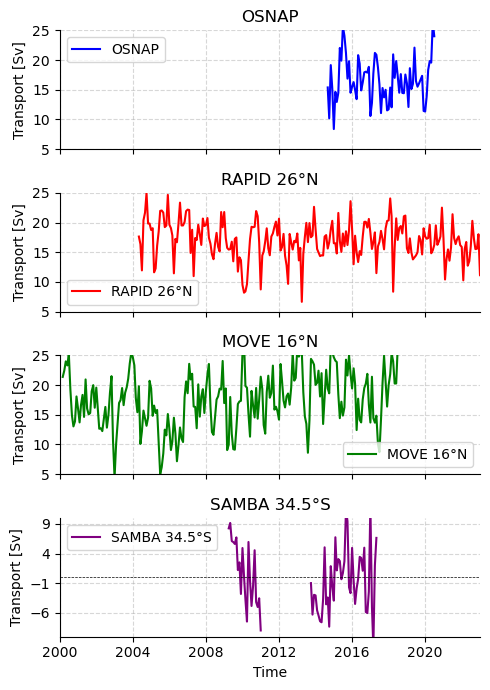

AMOCarray demo
The purpose of this notebook is to demonstrate the functionality of AMOCarray.
The demo is organised to show
Step 1: Loading and plotting a sample dataset
Step 2: Exploring the dataset attributes and variables.
Note that when you submit a pull request, you should clear all outputs from your python notebook for a cleaner merge.
[1]:
import pathlib
import sys
script_dir = pathlib.Path().parent.absolute()
parent_dir = script_dir.parents[0]
sys.path.append(str(parent_dir))
import importlib
import xarray as xr
import os
from amocarray import readers, plotters, standardise, utilities
[2]:
# Specify the path for writing datafiles
data_path = os.path.join(parent_dir, "data")
Load RAPID 26°N
[3]:
# Load data from data/moc_transports
ds_rapid = readers.load_sample_dataset()
ds_rapid = standardise.standardise_rapid(ds_rapid, ds_rapid.attrs["source_file"])
datasetsRAPID = readers.load_dataset("rapid", transport_only=False)
standardRAPID = [
standardise.standardise_rapid(ds, ds.attrs["source_file"]) for ds in datasetsRAPID
]
ds_rapid
20250422T074307 INFO setup_logger Logger initialized for array: rapid, writing to /home/runner/work/amocarray/amocarray/logs/RAPID_20250422T07_read.log
20250422T074307 INFO load_dataset Loading dataset for array: rapid
20250422T074307 INFO read_rapid Starting to read RAPID dataset
20250422T074307 INFO resolve_file_path Using cached file: /home/runner/work/amocarray/amocarray/data/moc_transports.nc
20250422T074307 INFO read_rapid Opening RAPID dataset: /home/runner/work/amocarray/amocarray/data/moc_transports.nc
20250422T074307 INFO read_rapid Attaching metadata to RAPID dataset from file: moc_transports.nc
20250422T074307 INFO read_rapid Successfully loaded 1 RAPID dataset(s)
20250422T074307 INFO load_dataset Successfully loaded 1 dataset(s) for array: rapid
20250422T074307 INFO _summarise_datasets
Summary for array 'rapid':
Total datasets loaded: 1
Dataset 1:
Source file: moc_transports.nc
Time coverage: TIME variable not found
Dimensions:
- time: 13779
Variables:
- t_therm10: shape (13779,)
- t_aiw10: shape (13779,)
- t_ud10: shape (13779,)
- t_ld10: shape (13779,)
- t_bw10: shape (13779,)
- t_gs10: shape (13779,)
- t_ek10: shape (13779,)
- t_umo10: shape (13779,)
- moc_mar_hc10: shape (13779,)
20250422T074307 DEBUG standardise_array Standardising moc_transports.nc for RAPID
20250422T074307 DEBUG merge_metadata_aliases Renaming key 'Title' → 'title'
20250422T074307 DEBUG merge_metadata_aliases Renaming key 'Institution' → 'institution'
20250422T074307 DEBUG merge_metadata_aliases Renaming key 'Website' → 'web_link'
20250422T074307 DEBUG merge_metadata_aliases Renaming key 'Acknowledgement' → 'acknowledgement'
20250422T074307 DEBUG merge_metadata_aliases Renaming key 'Created_by' → 'creator_name'
20250422T074307 DEBUG merge_metadata_aliases Renaming key 'Creation_date' → 'date_created'
20250422T074307 DEBUG merge_metadata_aliases Renaming key 'Principle_investigator' → 'principal_investigator'
20250422T074307 DEBUG merge_metadata_aliases Renaming key 'Principle_investigator_email' → 'principal_investigator_email'
20250422T074307 DEBUG merge_metadata_aliases Renaming key 'DOI' → 'doi'
20250422T074307 DEBUG merge_metadata_aliases Conflict for 'web_link' from 'web_link'; keeping first value
20250422T074307 DEBUG merge_metadata_aliases Renaming key 'note' → 'comment'
20250422T074307 DEBUG merge_metadata_aliases Renaming key 'weblink' → 'web_link'
20250422T074307 DEBUG merge_metadata_aliases Conflict for 'web_link' from 'weblink'; keeping first value
20250422T074307 DEBUG merge_metadata_aliases Conflict for 'comment' from 'comment'; keeping first value
20250422T074307 DEBUG merge_metadata_aliases Skipped duplicate (identical) key 'acknowledgement' → 'acknowledgement'
20250422T074307 DEBUG merge_metadata_aliases Renaming key 'platform_type' → 'platform'
20250422T074307 DEBUG merge_metadata_aliases Skipped duplicate (identical) key 'creator_name' → 'creator_name'
20250422T074307 DEBUG merge_metadata_aliases Conflict for 'institution' from 'institution'; keeping first value
20250422T074307 DEBUG merge_metadata_aliases Conflict for 'doi' from 'doi'; keeping first value
20250422T074307 DEBUG _consolidate_contributors Starting _consolidate_contributors with attrs: {'title': 'RAPID MOC timeseries', 'institution': 'National Oceanography Centre,UK', 'web_link': 'http://www.rapid.ac.uk/', 'acknowledgement': 'The RAPID-MOC monitoring project is funded by the Natural Environment Research Council and data is freely available from www.rapid.ac.uk/', 'creator_name': 'Ben Moat', 'date_created': '17-Sep-2024', 'principal_investigator': 'Ben Moat', 'principal_investigator_email': 'ben.moat@noc.ac.uk', 'doi': 'doi: 10.5285/223b34a32dc5c945e0637086abc0f274', 'source_file': 'moc_transports.nc', 'source_path': '/home/runner/work/amocarray/amocarray/data/moc_transports.nc', 'description': 'RAPID 26N transport estimates dataset', 'project': 'RAPID-AMOC 26°N array', 'comment': 'Dataset accessed and processed via xarray', 'data_product': 'RAPID layer transport time series', 'program': 'RAPID', 'license': 'CC-BY 4.0', 'featureType': 'timeSeries', 'Conventions': 'CF-1.8, ACDD-1.3', 'time_coverage_start': '2004-04-01', 'time_coverage_end': '2023-12-31', 'platform': 'Mooring array', 'creator_email': 'ben.moat@noc.ac.uk', 'summary': 'RAPID 26N transport estimates dataset'}
20250422T074307 DEBUG _consolidate_contributors Email buckets: {'principal_investigator_email': ['ben.moat@noc.ac.uk'], 'creator_email': ['ben.moat@noc.ac.uk']}
20250422T074307 DEBUG _consolidate_contributors URL buckets: {}
20250422T074307 DEBUG _consolidate_contributors Names: ['Ben Moat', 'Ben Moat']; Roles: ['creator', 'PI']; Sources: ['creator_name', 'principal_investigator']
20250422T074307 DEBUG _consolidate_contributors Set contributor_name='Ben Moat, Ben Moat', contributor_role='creator, PI'
20250422T074307 DEBUG _consolidate_contributors Aligned contributor_email='ben.moat@noc.ac.uk, ben.moat@noc.ac.uk'
20250422T074307 DEBUG _consolidate_contributors Aligned contributor_id=', '
20250422T074307 DEBUG _consolidate_contributors Matched institution 'National Oceanography Centre\xa0(Southampton) (UK)' → 'national oceanography centre (southampton) (uk)' → 'https://edmo.seadatanet.org/report/17'
20250422T074307 DEBUG _consolidate_contributors Finished _consolidate_contributors: {'title': 'RAPID MOC timeseries', 'web_link': 'http://www.rapid.ac.uk/', 'acknowledgement': 'The RAPID-MOC monitoring project is funded by the Natural Environment Research Council and data is freely available from www.rapid.ac.uk/', 'date_created': '17-Sep-2024', 'doi': 'doi: 10.5285/223b34a32dc5c945e0637086abc0f274', 'source_file': 'moc_transports.nc', 'source_path': '/home/runner/work/amocarray/amocarray/data/moc_transports.nc', 'description': 'RAPID 26N transport estimates dataset', 'project': 'RAPID-AMOC 26°N array', 'comment': 'Dataset accessed and processed via xarray', 'data_product': 'RAPID layer transport time series', 'program': 'RAPID', 'license': 'CC-BY 4.0', 'featureType': 'timeSeries', 'Conventions': 'CF-1.8, ACDD-1.3', 'time_coverage_start': '2004-04-01', 'time_coverage_end': '2023-12-31', 'platform': 'Mooring array', 'summary': 'RAPID 26N transport estimates dataset', 'contributor_name': 'Ben Moat, Ben Moat', 'contributor_role': 'creator, PI', 'contributor_email': 'ben.moat@noc.ac.uk, ben.moat@noc.ac.uk', 'contributor_id': ', ', 'contributing_institutions': 'National Oceanography Centre\xa0(Southampton) (UK)', 'contributing_institutions_vocabulary': 'https://edmo.seadatanet.org/report/17', 'contributing_institutions_role': '', 'contributing_institutions_role_vocabulary': ''}
20250422T074307 DEBUG normalize_and_add_vocabulary Normalized 'platform': 'Mooring array' → 'mooring'
20250422T074307 DEBUG normalize_and_add_vocabulary Added vocabulary for 'platform': https://vocab.nerc.ac.uk/collection/L06/
20250422T074307 DEBUG normalize_and_add_vocabulary Added vocabulary for 'featureType': https://cfconventions.org/cf-conventions/v1.6.0/cf-conventions.html#_features_and_feature_types
20250422T074307 INFO setup_logger Logger initialized for array: rapid, writing to /home/runner/work/amocarray/amocarray/logs/RAPID_20250422T07_read.log
20250422T074307 INFO load_dataset Loading dataset for array: rapid
20250422T074307 INFO read_rapid Starting to read RAPID dataset
20250422T074307 INFO resolve_file_path Using cached file: /home/runner/work/amocarray/amocarray/data/moc_vertical.nc
20250422T074307 INFO read_rapid Opening RAPID dataset: /home/runner/work/amocarray/amocarray/data/moc_vertical.nc
20250422T074307 INFO read_rapid Attaching metadata to RAPID dataset from file: moc_vertical.nc
20250422T074307 INFO resolve_file_path Downloading file from https://rapid.ac.uk/sites/default/files/rapid_data/ts_gridded.nc to /home/runner/work/amocarray/amocarray/data
Summary for array 'rapid':
Total datasets loaded: 1
Dataset 1:
Source file: moc_transports.nc
Time coverage: TIME variable not found
Dimensions:
- time: 13779
Variables:
- t_therm10: shape (13779,)
- t_aiw10: shape (13779,)
- t_ud10: shape (13779,)
- t_ld10: shape (13779,)
- t_bw10: shape (13779,)
- t_gs10: shape (13779,)
- t_ek10: shape (13779,)
- t_umo10: shape (13779,)
- moc_mar_hc10: shape (13779,)
20250422T074335 INFO read_rapid Opening RAPID dataset: /home/runner/work/amocarray/amocarray/data/ts_gridded.nc
20250422T074335 INFO read_rapid Attaching metadata to RAPID dataset from file: ts_gridded.nc
20250422T074335 INFO resolve_file_path Using cached file: /home/runner/work/amocarray/amocarray/data/moc_transports.nc
20250422T074335 INFO read_rapid Opening RAPID dataset: /home/runner/work/amocarray/amocarray/data/moc_transports.nc
20250422T074335 INFO read_rapid Attaching metadata to RAPID dataset from file: moc_transports.nc
20250422T074335 INFO read_rapid Successfully loaded 3 RAPID dataset(s)
20250422T074335 INFO load_dataset Successfully loaded 3 dataset(s) for array: rapid
20250422T074335 INFO _summarise_datasets
Summary for array 'rapid':
Total datasets loaded: 3
Dataset 1:
Source file: moc_vertical.nc
Time coverage: TIME variable not found
Dimensions:
- time: 13779
- depth: 307
Variables:
- stream_function_mar: shape (307, 13779)
Dataset 2:
Source file: ts_gridded.nc
Time coverage: TIME variable not found
Dimensions:
- time: 13779
- depth: 242
Variables:
- pressure: shape (242,)
- TG_west: shape (242, 13779)
- SG_west: shape (242, 13779)
- TG_wb3: shape (242, 13779)
- SG_wb3: shape (242, 13779)
- TG_east: shape (242, 13779)
- SG_east: shape (242, 13779)
- TG_marwest: shape (242, 13779)
- SG_marwest: shape (242, 13779)
- TG_mareast: shape (242, 13779)
- SG_mareast: shape (242, 13779)
- TG_west_flag: shape (242, 13779)
- SG_west_flag: shape (242, 13779)
- TG_east_flag: shape (242, 13779)
- SG_east_flag: shape (242, 13779)
- TG_marwest_flag: shape (242, 13779)
- SG_marwest_flag: shape (242, 13779)
- TG_mareast_flag: shape (242, 13779)
- SG_mareast_flag: shape (242, 13779)
Dataset 3:
Source file: moc_transports.nc
Time coverage: TIME variable not found
Dimensions:
- time: 13779
Variables:
- t_therm10: shape (13779,)
- t_aiw10: shape (13779,)
- t_ud10: shape (13779,)
- t_ld10: shape (13779,)
- t_bw10: shape (13779,)
- t_gs10: shape (13779,)
- t_ek10: shape (13779,)
- t_umo10: shape (13779,)
- moc_mar_hc10: shape (13779,)
20250422T074335 DEBUG standardise_array Standardising moc_vertical.nc for RAPID
20250422T074335 DEBUG merge_metadata_aliases Renaming key 'Title' → 'title'
20250422T074335 DEBUG merge_metadata_aliases Renaming key 'Institution' → 'institution'
20250422T074335 DEBUG merge_metadata_aliases Renaming key 'Website' → 'web_link'
20250422T074335 DEBUG merge_metadata_aliases Renaming key 'Acknowledgement' → 'acknowledgement'
20250422T074335 DEBUG merge_metadata_aliases Renaming key 'Created_by' → 'creator_name'
20250422T074335 DEBUG merge_metadata_aliases Renaming key 'Creation_date' → 'date_created'
20250422T074335 DEBUG merge_metadata_aliases Renaming key 'Principle_investigator' → 'principal_investigator'
20250422T074335 DEBUG merge_metadata_aliases Renaming key 'Principle_investigator_email' → 'principal_investigator_email'
20250422T074335 DEBUG merge_metadata_aliases Renaming key 'DOI' → 'doi'
20250422T074335 DEBUG merge_metadata_aliases Conflict for 'web_link' from 'web_link'; keeping first value
20250422T074335 DEBUG merge_metadata_aliases Renaming key 'note' → 'comment'
20250422T074335 DEBUG merge_metadata_aliases Renaming key 'weblink' → 'web_link'
20250422T074335 DEBUG merge_metadata_aliases Conflict for 'web_link' from 'weblink'; keeping first value
20250422T074335 DEBUG merge_metadata_aliases Conflict for 'comment' from 'comment'; keeping first value
20250422T074335 DEBUG merge_metadata_aliases Conflict for 'acknowledgement' from 'acknowledgement'; keeping first value
20250422T074335 DEBUG merge_metadata_aliases Renaming key 'platform_type' → 'platform'
20250422T074335 DEBUG merge_metadata_aliases Skipped duplicate (identical) key 'creator_name' → 'creator_name'
20250422T074335 DEBUG merge_metadata_aliases Conflict for 'institution' from 'institution'; keeping first value
20250422T074335 DEBUG merge_metadata_aliases Conflict for 'doi' from 'doi'; keeping first value
20250422T074335 DEBUG _consolidate_contributors Starting _consolidate_contributors with attrs: {'title': 'RAPID streamfunction', 'institution': 'National Oceanography Centre,UK', 'web_link': 'http://www.rapid.ac.uk/', 'acknowledgement': 'The RAPID 26N AMOC monitoring project is funded by the Natural Environment Research Council and data is freely available from www.rapid.ac.uk', 'creator_name': 'Ben Moat', 'date_created': '17-Sep-2024', 'principal_investigator': 'Ben Moat', 'principal_investigator_email': 'ben.moat@noc.ac.uk', 'doi': 'doi: 10.5285/223b34a32dc5c945e0637086abc0f274', 'source_file': 'moc_vertical.nc', 'source_path': '/home/runner/work/amocarray/amocarray/data/moc_vertical.nc', 'description': 'RAPID 26N transport estimates dataset', 'project': 'RAPID-AMOC 26°N array', 'comment': 'Dataset accessed and processed via xarray', 'data_product': 'RAPID vertical streamfunction time series', 'program': 'RAPID', 'license': 'CC-BY 4.0', 'featureType': 'timeSeries', 'Conventions': 'CF-1.8, ACDD-1.3', 'time_coverage_start': '2004-04-01', 'time_coverage_end': '2023-12-31', 'platform': 'Mooring array', 'creator_email': 'ben.moat@noc.ac.uk', 'summary': 'RAPID 26N transport estimates dataset'}
20250422T074335 DEBUG _consolidate_contributors Email buckets: {'principal_investigator_email': ['ben.moat@noc.ac.uk'], 'creator_email': ['ben.moat@noc.ac.uk']}
20250422T074335 DEBUG _consolidate_contributors URL buckets: {}
20250422T074335 DEBUG _consolidate_contributors Names: ['Ben Moat', 'Ben Moat']; Roles: ['creator', 'PI']; Sources: ['creator_name', 'principal_investigator']
20250422T074335 DEBUG _consolidate_contributors Set contributor_name='Ben Moat, Ben Moat', contributor_role='creator, PI'
20250422T074335 DEBUG _consolidate_contributors Aligned contributor_email='ben.moat@noc.ac.uk, ben.moat@noc.ac.uk'
20250422T074335 DEBUG _consolidate_contributors Aligned contributor_id=', '
20250422T074335 DEBUG _consolidate_contributors Matched institution 'National Oceanography Centre\xa0(Southampton) (UK)' → 'national oceanography centre (southampton) (uk)' → 'https://edmo.seadatanet.org/report/17'
20250422T074335 DEBUG _consolidate_contributors Finished _consolidate_contributors: {'title': 'RAPID streamfunction', 'web_link': 'http://www.rapid.ac.uk/', 'acknowledgement': 'The RAPID 26N AMOC monitoring project is funded by the Natural Environment Research Council and data is freely available from www.rapid.ac.uk', 'date_created': '17-Sep-2024', 'doi': 'doi: 10.5285/223b34a32dc5c945e0637086abc0f274', 'source_file': 'moc_vertical.nc', 'source_path': '/home/runner/work/amocarray/amocarray/data/moc_vertical.nc', 'description': 'RAPID 26N transport estimates dataset', 'project': 'RAPID-AMOC 26°N array', 'comment': 'Dataset accessed and processed via xarray', 'data_product': 'RAPID vertical streamfunction time series', 'program': 'RAPID', 'license': 'CC-BY 4.0', 'featureType': 'timeSeries', 'Conventions': 'CF-1.8, ACDD-1.3', 'time_coverage_start': '2004-04-01', 'time_coverage_end': '2023-12-31', 'platform': 'Mooring array', 'summary': 'RAPID 26N transport estimates dataset', 'contributor_name': 'Ben Moat, Ben Moat', 'contributor_role': 'creator, PI', 'contributor_email': 'ben.moat@noc.ac.uk, ben.moat@noc.ac.uk', 'contributor_id': ', ', 'contributing_institutions': 'National Oceanography Centre\xa0(Southampton) (UK)', 'contributing_institutions_vocabulary': 'https://edmo.seadatanet.org/report/17', 'contributing_institutions_role': '', 'contributing_institutions_role_vocabulary': ''}
20250422T074335 DEBUG normalize_and_add_vocabulary Normalized 'platform': 'Mooring array' → 'mooring'
20250422T074335 DEBUG normalize_and_add_vocabulary Added vocabulary for 'platform': https://vocab.nerc.ac.uk/collection/L06/
20250422T074335 DEBUG normalize_and_add_vocabulary Added vocabulary for 'featureType': https://cfconventions.org/cf-conventions/v1.6.0/cf-conventions.html#_features_and_feature_types
20250422T074335 DEBUG standardise_array Standardising ts_gridded.nc for RAPID
20250422T074335 DEBUG merge_metadata_aliases Renaming key 'Title' → 'title'
20250422T074335 DEBUG merge_metadata_aliases Renaming key 'Institution' → 'institution'
20250422T074335 DEBUG merge_metadata_aliases Renaming key 'Website' → 'web_link'
20250422T074335 DEBUG merge_metadata_aliases Renaming key 'Acknowledgement' → 'acknowledgement'
20250422T074335 DEBUG merge_metadata_aliases Renaming key 'Created_by' → 'creator_name'
20250422T074335 DEBUG merge_metadata_aliases Renaming key 'Creation_date' → 'date_created'
20250422T074335 DEBUG merge_metadata_aliases Renaming key 'Principle_investigator' → 'principal_investigator'
20250422T074335 DEBUG merge_metadata_aliases Renaming key 'Principle_investigator_email' → 'principal_investigator_email'
20250422T074335 DEBUG merge_metadata_aliases Renaming key 'DOI' → 'doi'
20250422T074335 DEBUG merge_metadata_aliases Conflict for 'web_link' from 'web_link'; keeping first value
20250422T074335 DEBUG merge_metadata_aliases Renaming key 'note' → 'comment'
20250422T074335 DEBUG merge_metadata_aliases Renaming key 'weblink' → 'web_link'
20250422T074335 DEBUG merge_metadata_aliases Conflict for 'web_link' from 'weblink'; keeping first value
20250422T074335 DEBUG merge_metadata_aliases Conflict for 'comment' from 'comment'; keeping first value
20250422T074335 DEBUG merge_metadata_aliases Conflict for 'acknowledgement' from 'acknowledgement'; keeping first value
20250422T074335 DEBUG merge_metadata_aliases Renaming key 'platform_type' → 'platform'
20250422T074335 DEBUG merge_metadata_aliases Skipped duplicate (identical) key 'creator_name' → 'creator_name'
20250422T074335 DEBUG merge_metadata_aliases Conflict for 'institution' from 'institution'; keeping first value
20250422T074335 DEBUG merge_metadata_aliases Conflict for 'doi' from 'doi'; keeping first value
20250422T074335 DEBUG _consolidate_contributors Starting _consolidate_contributors with attrs: {'title': 'RAPID streamfunction', 'institution': 'National Oceanography Centre,UK', 'web_link': 'http://www.rapid.ac.uk/', 'acknowledgement': 'The RAPID 26N AMOC monitoring project is funded by the Natural Environment Research Council and data is freely available from www.rapid.ac.uk', 'creator_name': 'Ben Moat', 'date_created': '17-Sep-2024', 'principal_investigator': 'Ben Moat', 'principal_investigator_email': 'ben.moat@noc.ac.uk', 'doi': 'doi: 10.5285/223b34a32dc5c945e0637086abc0f274', 'source_file': 'ts_gridded.nc', 'source_path': '/home/runner/work/amocarray/amocarray/data/ts_gridded.nc', 'description': 'RAPID 26N transport estimates dataset', 'project': 'RAPID-AMOC 26°N array', 'comment': 'Dataset accessed and processed via xarray', 'data_product': 'RAPID gridded temperature and salinity', 'program': 'RAPID', 'license': 'CC-BY 4.0', 'featureType': 'timeSeries', 'Conventions': 'CF-1.8, ACDD-1.3', 'time_coverage_start': '2004-04-01', 'time_coverage_end': '2023-12-31', 'platform': 'Mooring array', 'creator_email': 'ben.moat@noc.ac.uk', 'summary': 'RAPID 26N transport estimates dataset'}
20250422T074335 DEBUG _consolidate_contributors Email buckets: {'principal_investigator_email': ['ben.moat@noc.ac.uk'], 'creator_email': ['ben.moat@noc.ac.uk']}
20250422T074335 DEBUG _consolidate_contributors URL buckets: {}
20250422T074335 DEBUG _consolidate_contributors Names: ['Ben Moat', 'Ben Moat']; Roles: ['creator', 'PI']; Sources: ['creator_name', 'principal_investigator']
20250422T074335 DEBUG _consolidate_contributors Set contributor_name='Ben Moat, Ben Moat', contributor_role='creator, PI'
20250422T074335 DEBUG _consolidate_contributors Aligned contributor_email='ben.moat@noc.ac.uk, ben.moat@noc.ac.uk'
20250422T074335 DEBUG _consolidate_contributors Aligned contributor_id=', '
20250422T074335 DEBUG _consolidate_contributors Matched institution 'National Oceanography Centre\xa0(Southampton) (UK)' → 'national oceanography centre (southampton) (uk)' → 'https://edmo.seadatanet.org/report/17'
20250422T074335 DEBUG _consolidate_contributors Finished _consolidate_contributors: {'title': 'RAPID streamfunction', 'web_link': 'http://www.rapid.ac.uk/', 'acknowledgement': 'The RAPID 26N AMOC monitoring project is funded by the Natural Environment Research Council and data is freely available from www.rapid.ac.uk', 'date_created': '17-Sep-2024', 'doi': 'doi: 10.5285/223b34a32dc5c945e0637086abc0f274', 'source_file': 'ts_gridded.nc', 'source_path': '/home/runner/work/amocarray/amocarray/data/ts_gridded.nc', 'description': 'RAPID 26N transport estimates dataset', 'project': 'RAPID-AMOC 26°N array', 'comment': 'Dataset accessed and processed via xarray', 'data_product': 'RAPID gridded temperature and salinity', 'program': 'RAPID', 'license': 'CC-BY 4.0', 'featureType': 'timeSeries', 'Conventions': 'CF-1.8, ACDD-1.3', 'time_coverage_start': '2004-04-01', 'time_coverage_end': '2023-12-31', 'platform': 'Mooring array', 'summary': 'RAPID 26N transport estimates dataset', 'contributor_name': 'Ben Moat, Ben Moat', 'contributor_role': 'creator, PI', 'contributor_email': 'ben.moat@noc.ac.uk, ben.moat@noc.ac.uk', 'contributor_id': ', ', 'contributing_institutions': 'National Oceanography Centre\xa0(Southampton) (UK)', 'contributing_institutions_vocabulary': 'https://edmo.seadatanet.org/report/17', 'contributing_institutions_role': '', 'contributing_institutions_role_vocabulary': ''}
20250422T074335 DEBUG normalize_and_add_vocabulary Normalized 'platform': 'Mooring array' → 'mooring'
20250422T074335 DEBUG normalize_and_add_vocabulary Added vocabulary for 'platform': https://vocab.nerc.ac.uk/collection/L06/
20250422T074335 DEBUG normalize_and_add_vocabulary Added vocabulary for 'featureType': https://cfconventions.org/cf-conventions/v1.6.0/cf-conventions.html#_features_and_feature_types
20250422T074335 DEBUG standardise_array Standardising moc_transports.nc for RAPID
20250422T074335 DEBUG merge_metadata_aliases Renaming key 'Title' → 'title'
20250422T074335 DEBUG merge_metadata_aliases Renaming key 'Institution' → 'institution'
20250422T074335 DEBUG merge_metadata_aliases Renaming key 'Website' → 'web_link'
20250422T074335 DEBUG merge_metadata_aliases Renaming key 'Acknowledgement' → 'acknowledgement'
20250422T074335 DEBUG merge_metadata_aliases Renaming key 'Created_by' → 'creator_name'
20250422T074335 DEBUG merge_metadata_aliases Renaming key 'Creation_date' → 'date_created'
20250422T074335 DEBUG merge_metadata_aliases Renaming key 'Principle_investigator' → 'principal_investigator'
20250422T074335 DEBUG merge_metadata_aliases Renaming key 'Principle_investigator_email' → 'principal_investigator_email'
20250422T074335 DEBUG merge_metadata_aliases Renaming key 'DOI' → 'doi'
20250422T074335 DEBUG merge_metadata_aliases Conflict for 'web_link' from 'web_link'; keeping first value
20250422T074335 DEBUG merge_metadata_aliases Renaming key 'note' → 'comment'
20250422T074335 DEBUG merge_metadata_aliases Renaming key 'weblink' → 'web_link'
20250422T074335 DEBUG merge_metadata_aliases Conflict for 'web_link' from 'weblink'; keeping first value
20250422T074335 DEBUG merge_metadata_aliases Conflict for 'comment' from 'comment'; keeping first value
20250422T074335 DEBUG merge_metadata_aliases Skipped duplicate (identical) key 'acknowledgement' → 'acknowledgement'
20250422T074335 DEBUG merge_metadata_aliases Renaming key 'platform_type' → 'platform'
20250422T074335 DEBUG merge_metadata_aliases Skipped duplicate (identical) key 'creator_name' → 'creator_name'
20250422T074335 DEBUG merge_metadata_aliases Conflict for 'institution' from 'institution'; keeping first value
20250422T074335 DEBUG merge_metadata_aliases Conflict for 'doi' from 'doi'; keeping first value
20250422T074335 DEBUG _consolidate_contributors Starting _consolidate_contributors with attrs: {'title': 'RAPID MOC timeseries', 'institution': 'National Oceanography Centre,UK', 'web_link': 'http://www.rapid.ac.uk/', 'acknowledgement': 'The RAPID-MOC monitoring project is funded by the Natural Environment Research Council and data is freely available from www.rapid.ac.uk/', 'creator_name': 'Ben Moat', 'date_created': '17-Sep-2024', 'principal_investigator': 'Ben Moat', 'principal_investigator_email': 'ben.moat@noc.ac.uk', 'doi': 'doi: 10.5285/223b34a32dc5c945e0637086abc0f274', 'source_file': 'moc_transports.nc', 'source_path': '/home/runner/work/amocarray/amocarray/data/moc_transports.nc', 'description': 'RAPID 26N transport estimates dataset', 'project': 'RAPID-AMOC 26°N array', 'comment': 'Dataset accessed and processed via xarray', 'data_product': 'RAPID layer transport time series', 'program': 'RAPID', 'license': 'CC-BY 4.0', 'featureType': 'timeSeries', 'Conventions': 'CF-1.8, ACDD-1.3', 'time_coverage_start': '2004-04-01', 'time_coverage_end': '2023-12-31', 'platform': 'Mooring array', 'creator_email': 'ben.moat@noc.ac.uk', 'summary': 'RAPID 26N transport estimates dataset'}
20250422T074335 DEBUG _consolidate_contributors Email buckets: {'principal_investigator_email': ['ben.moat@noc.ac.uk'], 'creator_email': ['ben.moat@noc.ac.uk']}
20250422T074335 DEBUG _consolidate_contributors URL buckets: {}
20250422T074335 DEBUG _consolidate_contributors Names: ['Ben Moat', 'Ben Moat']; Roles: ['creator', 'PI']; Sources: ['creator_name', 'principal_investigator']
20250422T074335 DEBUG _consolidate_contributors Set contributor_name='Ben Moat, Ben Moat', contributor_role='creator, PI'
20250422T074335 DEBUG _consolidate_contributors Aligned contributor_email='ben.moat@noc.ac.uk, ben.moat@noc.ac.uk'
20250422T074335 DEBUG _consolidate_contributors Aligned contributor_id=', '
20250422T074335 DEBUG _consolidate_contributors Matched institution 'National Oceanography Centre\xa0(Southampton) (UK)' → 'national oceanography centre (southampton) (uk)' → 'https://edmo.seadatanet.org/report/17'
20250422T074335 DEBUG _consolidate_contributors Finished _consolidate_contributors: {'title': 'RAPID MOC timeseries', 'web_link': 'http://www.rapid.ac.uk/', 'acknowledgement': 'The RAPID-MOC monitoring project is funded by the Natural Environment Research Council and data is freely available from www.rapid.ac.uk/', 'date_created': '17-Sep-2024', 'doi': 'doi: 10.5285/223b34a32dc5c945e0637086abc0f274', 'source_file': 'moc_transports.nc', 'source_path': '/home/runner/work/amocarray/amocarray/data/moc_transports.nc', 'description': 'RAPID 26N transport estimates dataset', 'project': 'RAPID-AMOC 26°N array', 'comment': 'Dataset accessed and processed via xarray', 'data_product': 'RAPID layer transport time series', 'program': 'RAPID', 'license': 'CC-BY 4.0', 'featureType': 'timeSeries', 'Conventions': 'CF-1.8, ACDD-1.3', 'time_coverage_start': '2004-04-01', 'time_coverage_end': '2023-12-31', 'platform': 'Mooring array', 'summary': 'RAPID 26N transport estimates dataset', 'contributor_name': 'Ben Moat, Ben Moat', 'contributor_role': 'creator, PI', 'contributor_email': 'ben.moat@noc.ac.uk, ben.moat@noc.ac.uk', 'contributor_id': ', ', 'contributing_institutions': 'National Oceanography Centre\xa0(Southampton) (UK)', 'contributing_institutions_vocabulary': 'https://edmo.seadatanet.org/report/17', 'contributing_institutions_role': '', 'contributing_institutions_role_vocabulary': ''}
20250422T074335 DEBUG normalize_and_add_vocabulary Normalized 'platform': 'Mooring array' → 'mooring'
20250422T074335 DEBUG normalize_and_add_vocabulary Added vocabulary for 'platform': https://vocab.nerc.ac.uk/collection/L06/
20250422T074335 DEBUG normalize_and_add_vocabulary Added vocabulary for 'featureType': https://cfconventions.org/cf-conventions/v1.6.0/cf-conventions.html#_features_and_feature_types
Summary for array 'rapid':
Total datasets loaded: 3
Dataset 1:
Source file: moc_vertical.nc
Time coverage: TIME variable not found
Dimensions:
- time: 13779
- depth: 307
Variables:
- stream_function_mar: shape (307, 13779)
Dataset 2:
Source file: ts_gridded.nc
Time coverage: TIME variable not found
Dimensions:
- time: 13779
- depth: 242
Variables:
- pressure: shape (242,)
- TG_west: shape (242, 13779)
- SG_west: shape (242, 13779)
- TG_wb3: shape (242, 13779)
- SG_wb3: shape (242, 13779)
- TG_east: shape (242, 13779)
- SG_east: shape (242, 13779)
- TG_marwest: shape (242, 13779)
- SG_marwest: shape (242, 13779)
- TG_mareast: shape (242, 13779)
- SG_mareast: shape (242, 13779)
- TG_west_flag: shape (242, 13779)
- SG_west_flag: shape (242, 13779)
- TG_east_flag: shape (242, 13779)
- SG_east_flag: shape (242, 13779)
- TG_marwest_flag: shape (242, 13779)
- SG_marwest_flag: shape (242, 13779)
- TG_mareast_flag: shape (242, 13779)
- SG_mareast_flag: shape (242, 13779)
Dataset 3:
Source file: moc_transports.nc
Time coverage: TIME variable not found
Dimensions:
- time: 13779
Variables:
- t_therm10: shape (13779,)
- t_aiw10: shape (13779,)
- t_ud10: shape (13779,)
- t_ld10: shape (13779,)
- t_bw10: shape (13779,)
- t_gs10: shape (13779,)
- t_ek10: shape (13779,)
- t_umo10: shape (13779,)
- moc_mar_hc10: shape (13779,)
[3]:
<xarray.Dataset> Size: 1MB
Dimensions: (TIME: 13779)
Coordinates:
* TIME (TIME) datetime64[ns] 110kB 2004-04-02 ... 2023-02-11
Data variables:
t_therm10 (TIME) float64 110kB ...
t_aiw10 (TIME) float64 110kB ...
t_ud10 (TIME) float64 110kB ...
t_ld10 (TIME) float64 110kB ...
t_bw10 (TIME) float64 110kB ...
t_gs10 (TIME) float64 110kB ...
t_ek10 (TIME) float64 110kB ...
t_umo10 (TIME) float64 110kB ...
moc_mar_hc10 (TIME) float64 110kB ...
Attributes: (12/29)
title: RAPID MOC timeseries
platform: mooring
platform_vocabulary: https://vocab.nerc.ac.uk/coll...
time_coverage_start: 2004-04-01
time_coverage_end: 2023-12-31
program: RAPID
... ...
description: RAPID 26N transport estimates...
data_product: RAPID layer transport time se...
license: CC-BY 4.0
Conventions: CF-1.8, ACDD-1.3
summary: RAPID 26N transport estimates...
featureType_vocabulary: https://cfconventions.org/cf-...[4]:
import matplotlib.pyplot as plt
# Resample the dataset to monthly averages
ds_monthly = ds_rapid.resample(TIME="ME").mean()
# Initialize the figure and axes with a specific figure size
fig, axes = plt.subplots(figsize=(8, 3))
# Plot the original dataset in thin grey
plt.plot(
ds_rapid["TIME"],
ds_rapid["moc_mar_hc10"],
color="grey",
alpha=0.5,
linewidth=0.5,
label="Original",
)
# Plot the monthly averaged dataset in thick red
plt.plot(
ds_monthly["TIME"],
ds_monthly["moc_mar_hc10"],
color="red",
linewidth=1,
label="Monthly Average",
)
# Add a horizontal line at y=0
plt.axhline(0, color="black", linestyle="--", linewidth=0.5)
# Customize the axes
axes.spines["top"].set_visible(False)
axes.spines["right"].set_visible(False)
# Add title and labels
plt.title("RAPID 26°N - AMOC")
plt.xlabel("Time")
plt.ylabel("Transport [Sv]")
plt.legend()
[4]:
<matplotlib.legend.Legend at 0x7fe7c4b09940>

Load MOVE 16°N
[5]:
datasetsMOVE = readers.load_dataset("move")
ds_move = datasetsMOVE[0]
standardMOVE = [
standardise.standardise_move(ds, ds.attrs["source_file"]) for ds in datasetsMOVE
]
20250422T074336 INFO setup_logger Logger initialized for array: move, writing to /home/runner/work/amocarray/amocarray/logs/MOVE_20250422T07_read.log
20250422T074336 INFO load_dataset Loading dataset for array: move
20250422T074336 INFO read_move Starting to read MOVE dataset
20250422T074336 INFO resolve_file_path Using cached file: /home/runner/work/amocarray/amocarray/data/OS_MOVE_TRANSPORTS.nc
20250422T074336 INFO read_move Opening MOVE dataset: /home/runner/work/amocarray/amocarray/data/OS_MOVE_TRANSPORTS.nc
20250422T074336 INFO read_move Attaching metadata to dataset from file: OS_MOVE_TRANSPORTS.nc
20250422T074336 DEBUG safe_update_attrs Attribute 'project' already exists in dataset attrs and will not be overwritten.
20250422T074336 DEBUG safe_update_attrs Attribute 'comment' already exists in dataset attrs and will not be overwritten.
20250422T074336 DEBUG safe_update_attrs Attribute 'acknowledgement' already exists in dataset attrs and will not be overwritten.
20250422T074336 INFO read_move Successfully loaded 1 MOVE dataset(s)
20250422T074336 INFO load_dataset Successfully loaded 1 dataset(s) for array: move
20250422T074336 INFO _summarise_datasets
Summary for array 'move':
Total datasets loaded: 1
Dataset 1:
Source file: OS_MOVE_TRANSPORTS.nc
Time coverage: 2000-01-01 to 2018-06-30
Dimensions:
- TIME: 6756
Variables:
- TRANSPORT_TOTAL: shape (6756,)
- transport_component_internal: shape (6756,)
- transport_component_internal_offset: shape (6756,)
- transport_component_boundary: shape (6756,)
20250422T074336 DEBUG standardise_array Standardising OS_MOVE_TRANSPORTS.nc for MOVE
20250422T074336 DEBUG merge_metadata_aliases Renaming key 'weblink' → 'web_link'
20250422T074336 DEBUG merge_metadata_aliases Renaming key 'reference' → 'references'
20250422T074336 DEBUG merge_metadata_aliases Conflict for 'references' from 'reference'; keeping first value
20250422T074336 DEBUG merge_metadata_aliases Renaming key 'platform_type' → 'platform'
20250422T074336 DEBUG _consolidate_contributors Starting _consolidate_contributors with attrs: {'Conventions': 'CF-1.7, ACDD-1.3', 'title': 'Ocean Volume Transport Data from the MOVE Mooring Observations', 'summary': 'MOVE transport estimates dataset from UCSD mooring project', 'date_created': '2019-01-30T18:13:16Z', 'creator_name': 'Matthias Lankhorst', 'creator_url': 'http://orcid.org/0000-0002-4166-4044', 'contributor_name': 'Uwe Send, Matthias Lankhorst', 'contributor_role': 'Principal Investigator, Creator', 'institution': 'Scripps Institution of Oceanography', 'project': 'Meridional Overturning Variability Experiment (MOVE)', 'references': 'http://dx.doi.org/10.1016/j.dsr.2005.12.007 http://dx.doi.org/10.1029/2011GL049801', 'comment': 'Dataset accessed and processed via http://github.com/AMOCcommunity/amocarray', 'license': "Data freely available. User assumes all risk for use of data. Please give due credit to the authors, project, and funding sources when using these data, e.g. by including the 'citation' text provided here.", 'citation': 'Collection of MOVE data was funded by NOAA Research, and carried out by principal investigators Uwe Send and Matthias Lankhorst. MOVE data are made freely available through the international OceanSITES program.', 'acknowledgement': 'The MOVE project is made possible with funding from the NOAA Climate Program Office under award NA15OAR4320071. Initial funding came from the German Bundesministerium fuer Bildung und Forschung.', 'source': 'Derived using the following files: OceanSITES file OS_MOVE_MULTISITE_GRIDDED_TS.nc, created 2019-01-30T18:11:12Z OceanSITES file OS_MOVE_MULTISITE_GRIDDED_V.nc, created 2019-01-17T00:40:57Z', 'source_file': 'OS_MOVE_TRANSPORTS.nc', 'source_path': '/home/runner/work/amocarray/amocarray/data/OS_MOVE_TRANSPORTS.nc', 'description': 'MOVE transport estimates dataset from UCSD mooring project', 'web_link': 'https://mooring.ucsd.edu/move/', 'data_product': 'MOVE transport time series', 'program': 'MOVE', 'contributor_url': '_ , http://orcid.org/0000-0002-4166-4044', 'doi': 'http://dx.doi.org/10.1016/j.dsr.2005.12.007 http://dx.doi.org/10.1029/2011GL049801', 'featureType': 'timeSeries', 'time_coverage_start': '2000-01-01', 'time_coverage_end': '2018-06-30', 'platform': 'Mooring array'}
20250422T074336 DEBUG _consolidate_contributors Email buckets: {}
20250422T074336 DEBUG _consolidate_contributors URL buckets: {'creator_url': ['http://orcid.org/0000-0002-4166-4044'], 'contributor_url': ['_', 'http://orcid.org/0000-0002-4166-4044']}
20250422T074336 DEBUG _consolidate_contributors Names: ['Matthias Lankhorst', 'Uwe Send', 'Matthias Lankhorst']; Roles: ['creator', '', '']; Sources: ['creator_name', 'contributor_name', 'contributor_name']
20250422T074336 DEBUG _consolidate_contributors Set contributor_name='Matthias Lankhorst, Uwe Send, Matthias Lankhorst', contributor_role='Principal Investigator, Creator'
20250422T074336 DEBUG _consolidate_contributors Aligned contributor_email=', , '
20250422T074336 DEBUG _consolidate_contributors Aligned contributor_id='http://orcid.org/0000-0002-4166-4044, _, http://orcid.org/0000-0002-4166-4044'
20250422T074336 DEBUG _consolidate_contributors Matched institution 'Scripps Institution of Oceanography' → 'scripps institution of oceanography' → ''
20250422T074336 DEBUG _consolidate_contributors Finished _consolidate_contributors: {'Conventions': 'CF-1.7, ACDD-1.3', 'title': 'Ocean Volume Transport Data from the MOVE Mooring Observations', 'summary': 'MOVE transport estimates dataset from UCSD mooring project', 'date_created': '2019-01-30T18:13:16Z', 'contributor_role': 'Principal Investigator, Creator', 'project': 'Meridional Overturning Variability Experiment (MOVE)', 'references': 'http://dx.doi.org/10.1016/j.dsr.2005.12.007 http://dx.doi.org/10.1029/2011GL049801', 'comment': 'Dataset accessed and processed via http://github.com/AMOCcommunity/amocarray', 'license': "Data freely available. User assumes all risk for use of data. Please give due credit to the authors, project, and funding sources when using these data, e.g. by including the 'citation' text provided here.", 'citation': 'Collection of MOVE data was funded by NOAA Research, and carried out by principal investigators Uwe Send and Matthias Lankhorst. MOVE data are made freely available through the international OceanSITES program.', 'acknowledgement': 'The MOVE project is made possible with funding from the NOAA Climate Program Office under award NA15OAR4320071. Initial funding came from the German Bundesministerium fuer Bildung und Forschung.', 'source': 'Derived using the following files: OceanSITES file OS_MOVE_MULTISITE_GRIDDED_TS.nc, created 2019-01-30T18:11:12Z OceanSITES file OS_MOVE_MULTISITE_GRIDDED_V.nc, created 2019-01-17T00:40:57Z', 'source_file': 'OS_MOVE_TRANSPORTS.nc', 'source_path': '/home/runner/work/amocarray/amocarray/data/OS_MOVE_TRANSPORTS.nc', 'description': 'MOVE transport estimates dataset from UCSD mooring project', 'web_link': 'https://mooring.ucsd.edu/move/', 'data_product': 'MOVE transport time series', 'program': 'MOVE', 'doi': 'http://dx.doi.org/10.1016/j.dsr.2005.12.007 http://dx.doi.org/10.1029/2011GL049801', 'featureType': 'timeSeries', 'time_coverage_start': '2000-01-01', 'time_coverage_end': '2018-06-30', 'platform': 'Mooring array', 'contributor_name': 'Matthias Lankhorst, Uwe Send, Matthias Lankhorst', 'contributor_email': ', , ', 'contributor_id': 'http://orcid.org/0000-0002-4166-4044, _, http://orcid.org/0000-0002-4166-4044', 'contributing_institutions': 'Scripps Institution of Oceanography', 'contributing_institutions_vocabulary': '', 'contributing_institutions_role': '', 'contributing_institutions_role_vocabulary': ''}
20250422T074336 DEBUG normalize_and_add_vocabulary Normalized 'platform': 'Mooring array' → 'mooring'
20250422T074336 DEBUG normalize_and_add_vocabulary Added vocabulary for 'platform': https://vocab.nerc.ac.uk/collection/L06/
20250422T074336 DEBUG normalize_and_add_vocabulary Added vocabulary for 'featureType': https://cfconventions.org/cf-conventions/v1.6.0/cf-conventions.html#_features_and_feature_types
Summary for array 'move':
Total datasets loaded: 1
Dataset 1:
Source file: OS_MOVE_TRANSPORTS.nc
Time coverage: 2000-01-01 to 2018-06-30
Dimensions:
- TIME: 6756
Variables:
- TRANSPORT_TOTAL: shape (6756,)
- transport_component_internal: shape (6756,)
- transport_component_internal_offset: shape (6756,)
- transport_component_boundary: shape (6756,)
[6]:
# Resample the dataset to monthly averages
ds_monthly = ds_move.resample(TIME="ME").mean()
# Create a figure and axis
fig, ax = plt.subplots(figsize=(10, 3))
# Plot the total transport from the MOVE dataset in thin grey
ax.plot(
ds_move["TIME"],
ds_move["TRANSPORT_TOTAL"],
color="grey",
alpha=0.5,
linewidth=0.5,
label="Total Transport",
)
# Plot the monthly averaged dataset in thick red
ax.plot(
ds_monthly["TIME"],
ds_monthly["TRANSPORT_TOTAL"],
color="darkblue",
linewidth=1,
label="Monthly Average",
)
# Add a horizontal line at y=0
ax.axhline(0, color="black", linestyle="--", linewidth=0.5)
# Customize the axes
ax.spines["top"].set_visible(False)
ax.spines["right"].set_visible(False)
# Add labels, title, and legend
ax.set_title("MOVE 16°N - NADW transport")
ax.set_xlabel("Time")
ax.set_ylabel("Transport [Sv]")
ax.legend()
# Customize the grid
ax.grid(True, linestyle="--", alpha=0.5)

Load OSNAP
[7]:
datasetsOSNAP = readers.load_dataset("osnap")
ds_osnap = datasetsOSNAP[0]
standardOSNAP = [
standardise.standardise_osnap(ds, ds.attrs["source_file"]) for ds in datasetsOSNAP
]
20250422T074336 INFO setup_logger Logger initialized for array: osnap, writing to /home/runner/work/amocarray/amocarray/logs/OSNAP_20250422T07_read.log
20250422T074336 INFO load_dataset Loading dataset for array: osnap
20250422T074336 INFO read_osnap Starting to read OSNAP dataset
20250422T074336 INFO resolve_file_path Downloading file from https://repository.gatech.edu/bitstreams/e039e311-dd2e-4511-a525-c2fcfb3be85a/download to /home/runner/work/amocarray/amocarray/data
20250422T074337 INFO read_osnap Opening OSNAP dataset: /home/runner/work/amocarray/amocarray/data/download
20250422T074337 INFO read_osnap Attaching metadata to dataset from file: OSNAP_MOC_MHT_MFT_TimeSeries_201408_202006_2023.nc
20250422T074337 DEBUG safe_update_attrs Attribute 'project' already exists in dataset attrs and will not be overwritten.
20250422T074337 INFO read_osnap Successfully loaded 1 OSNAP dataset(s)
20250422T074337 INFO load_dataset Successfully loaded 1 dataset(s) for array: osnap
20250422T074337 INFO _summarise_datasets
Summary for array 'osnap':
Total datasets loaded: 1
Dataset 1:
Source file: OSNAP_MOC_MHT_MFT_TimeSeries_201408_202006_2023.nc
Time coverage: 2014-08-01 to 2020-06-01
Dimensions:
- TIME: 71
Variables:
- MOC_ALL: shape (71,)
- MOC_ALL_ERR: shape (71,)
- MOC_EAST: shape (71,)
- MOC_EAST_ERR: shape (71,)
- MOC_WEST: shape (71,)
- MOC_WEST_ERR: shape (71,)
- MHT_ALL: shape (71,)
- MHT_ALL_ERR: shape (71,)
- MHT_EAST: shape (71,)
- MHT_EAST_ERR: shape (71,)
- MHT_WEST: shape (71,)
- MHT_WEST_ERR: shape (71,)
- MFT_ALL: shape (71,)
- MFT_ALL_ERR: shape (71,)
- MFT_EAST: shape (71,)
- MFT_EAST_ERR: shape (71,)
- MFT_WEST: shape (71,)
- MFT_WEST_ERR: shape (71,)
20250422T074337 DEBUG standardise_array Standardising OSNAP_MOC_MHT_MFT_TimeSeries_201408_202006_2023.nc for OSNAP
20250422T074337 DEBUG merge_metadata_aliases Renaming key 'weblink' → 'web_link'
20250422T074337 DEBUG merge_metadata_aliases Renaming key 'platform_type' → 'platform'
20250422T074337 DEBUG _consolidate_contributors Starting _consolidate_contributors with attrs: {'title': 'OSNAP MOC MHT MFT time series (2014-2020)', 'project': 'Overturning in the Subpolar North Atlantic Program (OSNAP)', 'contributor_name': 'Yao Fu, M. Susan Lozier, Tiago Carrilho Biló, Amy S. Bower, Stuart A. Cunningham, Frédéric Cyr, M. Femke de Jong, Brad deYoung, Lewis Drysdale, Neil Fraser, Nora Fried, Heather H. Furey, Guoqi Han, Patricia Handmann, N. Penny Holliday, James Holte, Mark E. Inall, William E. Johns, Sam Jones, Johannes Karstensen, Feili Li, Astrid Pacini, Robert S. Pickart, Darren Rayner, Fiammetta Straneo, Igor Yashayaev', 'contributor_role': 'data design, collection and/or processing', 'contributor_institution': 'Georgia Institute of Technology, USA; National Oceanography Centre at Southampton, UK; Woods Hole Oceanographic Institution, USA; Scottish Association for Marine Science, UK; Royal Netherlands Institute for Sea Research and Utrecht University, Netherlands; Memorial University, Canada; Fisheries and Oceans Canada Northwest Atlantic Fisheries Centre and Institute of Ocean Sciences, Canada; Scripps Institution of Oceanography, UCSD, USA; Edinburgh University, UK; University of Miami, USA; GEOMAR Helmholtz Centre for Ocean Research Kiel, Germany; Bedford Institute of Oceanography, Canada; Xiamen University, China', 'publisher_name': 'M. Susan Lozier; Yao Fu', 'publisher_email': 'susan.lozier@gatech.edu; yaofu@gatech.edu;', 'data_assembly_center': 'Georgia Institute of Technology', 'references': 'Lozier et al. (2019), Science, doi:10.1126/science.aau6592; Li et al. (2017), JTECH, doi:10.1175/JTECH-D-16-0247.1; Li et al. (2021), Nature Communications, doi:10.1038/s41467-021-23350-2; Fu et al. (2023), Communications Earth & Environment, doi:10.1038/s43247-023-00848-9', 'citation': 'OSNAP data were collected and made freely available by the OSNAP (Overturning in the Subpolar North Atlantic Program) project and all the national programs that contribute to it (www.o-snap.org)', 'date_created': '2023-04-24 11:33:07', 'time_coverage_start': '2014-08-01', 'time_coverage_end': '2020-06-30', 'source_file': 'OSNAP_MOC_MHT_MFT_TimeSeries_201408_202006_2023.nc', 'source_path': '/home/runner/work/amocarray/amocarray/data/download', 'web_link': 'https://www.o-snap.org', 'comment': 'Dataset accessed and processed via http://github.com/AMOCcommunity/amocarray', 'acknowledgement': 'OSNAP data were collected and made freely available by the OSNAP (Overturning in the Subpolar North Atlantic Program) project and all the national programs that contribute to it (www.o-snap.org).', 'doi': 'https://doi.org/10.35090/gatech/70342', 'data_product': 'Time series of MOC, MHT, and MFT', 'program': 'OSNAP', 'description': 'OSNAP transport and hydrographic estimates dataset, 2014-2020', 'license': 'Creative Commons Attribution 4.0 International (CC BY 4.0)', 'Conventions': 'CF-1.8, ACDD-1.3', 'featureType': 'timeSeries', 'platform': 'Mooring array', 'institution': 'Multiple contributing institutions (US, UK, Germany, Netherlands, Canada, France, China)', 'creator_name': 'OSNAP investigators', 'data_policy': 'Any person making use of OSNAP observational data and/or numerical results must communicate with the responsible investigators at the start of the analysis and anticipate that the data collectors will be co-authors of published results. In cases where investigators choose not to be co-authors on publications that rely on their data, the parties responsible for collecting the data and the sponsoring funding agencies should be acknowledged, including reference to any relevant publications by the originating authors describing the data sets and a reference to the data set itself using its DOI. OSNAP data are intended for scholarly use by the academic and scientific community, with the express understanding that any such use will properly acknowledge the originating investigator.', 'summary': 'OSNAP transport and hydrographic estimates dataset, 2014-2020'}
20250422T074337 DEBUG _consolidate_contributors Email buckets: {'publisher_email': ['susan.lozier@gatech.edu', 'yaofu@gatech.edu']}
20250422T074337 DEBUG _consolidate_contributors URL buckets: {}
20250422T074337 DEBUG _consolidate_contributors Names: ['Yao Fu', 'M. Susan Lozier', 'Tiago Carrilho Biló', 'Amy S. Bower', 'Stuart A. Cunningham', 'Frédéric Cyr', 'M. Femke de Jong', 'Brad deYoung', 'Lewis Drysdale', 'Neil Fraser', 'Nora Fried', 'Heather H. Furey', 'Guoqi Han', 'Patricia Handmann', 'N. Penny Holliday', 'James Holte', 'Mark E. Inall', 'William E. Johns', 'Sam Jones', 'Johannes Karstensen', 'Feili Li', 'Astrid Pacini', 'Robert S. Pickart', 'Darren Rayner', 'Fiammetta Straneo', 'Igor Yashayaev', 'M. Susan Lozier', 'Yao Fu', 'OSNAP investigators']; Roles: ['', '', '', '', '', '', '', '', '', '', '', '', '', '', '', '', '', '', '', '', '', '', '', '', '', '', 'publisher', 'publisher', 'creator']; Sources: ['contributor_name', 'contributor_name', 'contributor_name', 'contributor_name', 'contributor_name', 'contributor_name', 'contributor_name', 'contributor_name', 'contributor_name', 'contributor_name', 'contributor_name', 'contributor_name', 'contributor_name', 'contributor_name', 'contributor_name', 'contributor_name', 'contributor_name', 'contributor_name', 'contributor_name', 'contributor_name', 'contributor_name', 'contributor_name', 'contributor_name', 'contributor_name', 'contributor_name', 'contributor_name', 'publisher_name', 'publisher_name', 'creator_name']
20250422T074337 DEBUG _consolidate_contributors Set contributor_name='Yao Fu, M. Susan Lozier, Tiago Carrilho Biló, Amy S. Bower, Stuart A. Cunningham, Frédéric Cyr, M. Femke de Jong, Brad deYoung, Lewis Drysdale, Neil Fraser, Nora Fried, Heather H. Furey, Guoqi Han, Patricia Handmann, N. Penny Holliday, James Holte, Mark E. Inall, William E. Johns, Sam Jones, Johannes Karstensen, Feili Li, Astrid Pacini, Robert S. Pickart, Darren Rayner, Fiammetta Straneo, Igor Yashayaev, M. Susan Lozier, Yao Fu, OSNAP investigators', contributor_role='data design, collection and/or processing'
20250422T074337 DEBUG _consolidate_contributors Aligned contributor_email=', , , , , , , , , , , , , , , , , , , , , , , , , , susan.lozier@gatech.edu, yaofu@gatech.edu, '
20250422T074337 DEBUG _consolidate_contributors Aligned contributor_id=', , , , , , , , , , , , , , , , , , , , , , , , , , , , '
20250422T074337 DEBUG _consolidate_contributors Matched institution 'Georgia Institute of Technology, USA' → 'georgia institute of technology, usa' → ''
20250422T074337 DEBUG _consolidate_contributors Matched institution 'National Oceanography Centre at Southampton, UK' → 'national oceanography centre at southampton, uk' → ''
20250422T074337 DEBUG _consolidate_contributors Matched institution 'Woods Hole Oceanographic Institution, USA' → 'woods hole oceanographic institution, usa' → ''
20250422T074337 DEBUG _consolidate_contributors Matched institution 'Scottish Association for Marine Science, UK' → 'scottish association for marine science, uk' → ''
20250422T074337 DEBUG _consolidate_contributors Matched institution 'Royal Netherlands Institute for Sea Research and Utrecht University, Netherlands' → 'royal netherlands institute for sea research and utrecht university, netherlands' → ''
20250422T074337 DEBUG _consolidate_contributors Matched institution 'Memorial University, Canada' → 'memorial university, canada' → ''
20250422T074337 DEBUG _consolidate_contributors Matched institution 'Fisheries and Oceans Canada Northwest Atlantic Fisheries Centre and Institute of Ocean Sciences, Canada' → 'fisheries and oceans canada northwest atlantic fisheries centre and institute of ocean sciences, canada' → ''
20250422T074337 DEBUG _consolidate_contributors Matched institution 'Scripps Institution of Oceanography, UCSD, USA' → 'scripps institution of oceanography, ucsd, usa' → ''
20250422T074337 DEBUG _consolidate_contributors Matched institution 'Edinburgh University, UK' → 'edinburgh university, uk' → ''
20250422T074337 DEBUG _consolidate_contributors Matched institution 'University of Miami, USA' → 'university of miami, usa' → ''
20250422T074337 DEBUG _consolidate_contributors Matched institution 'GEOMAR Helmholtz Centre for Ocean Research Kiel, Germany' → 'geomar helmholtz centre for ocean research kiel, germany' → ''
20250422T074337 DEBUG _consolidate_contributors Matched institution 'Bedford Institute of Oceanography, Canada' → 'bedford institute of oceanography, canada' → ''
20250422T074337 DEBUG _consolidate_contributors Matched institution 'Xiamen University, China' → 'xiamen university, china' → ''
20250422T074337 DEBUG _consolidate_contributors Matched institution 'Multiple contributing institutions (US, UK, Germany, Netherlands, Canada, France, China)' → 'multiple contributing institutions (us, uk, germany, netherlands, canada, france, china)' → ''
20250422T074337 DEBUG _consolidate_contributors Finished _consolidate_contributors: {'title': 'OSNAP MOC MHT MFT time series (2014-2020)', 'project': 'Overturning in the Subpolar North Atlantic Program (OSNAP)', 'contributor_role': 'data design, collection and/or processing', 'data_assembly_center': 'Georgia Institute of Technology', 'references': 'Lozier et al. (2019), Science, doi:10.1126/science.aau6592; Li et al. (2017), JTECH, doi:10.1175/JTECH-D-16-0247.1; Li et al. (2021), Nature Communications, doi:10.1038/s41467-021-23350-2; Fu et al. (2023), Communications Earth & Environment, doi:10.1038/s43247-023-00848-9', 'citation': 'OSNAP data were collected and made freely available by the OSNAP (Overturning in the Subpolar North Atlantic Program) project and all the national programs that contribute to it (www.o-snap.org)', 'date_created': '2023-04-24 11:33:07', 'time_coverage_start': '2014-08-01', 'time_coverage_end': '2020-06-30', 'source_file': 'OSNAP_MOC_MHT_MFT_TimeSeries_201408_202006_2023.nc', 'source_path': '/home/runner/work/amocarray/amocarray/data/download', 'web_link': 'https://www.o-snap.org', 'comment': 'Dataset accessed and processed via http://github.com/AMOCcommunity/amocarray', 'acknowledgement': 'OSNAP data were collected and made freely available by the OSNAP (Overturning in the Subpolar North Atlantic Program) project and all the national programs that contribute to it (www.o-snap.org).', 'doi': 'https://doi.org/10.35090/gatech/70342', 'data_product': 'Time series of MOC, MHT, and MFT', 'program': 'OSNAP', 'description': 'OSNAP transport and hydrographic estimates dataset, 2014-2020', 'license': 'Creative Commons Attribution 4.0 International (CC BY 4.0)', 'Conventions': 'CF-1.8, ACDD-1.3', 'featureType': 'timeSeries', 'platform': 'Mooring array', 'data_policy': 'Any person making use of OSNAP observational data and/or numerical results must communicate with the responsible investigators at the start of the analysis and anticipate that the data collectors will be co-authors of published results. In cases where investigators choose not to be co-authors on publications that rely on their data, the parties responsible for collecting the data and the sponsoring funding agencies should be acknowledged, including reference to any relevant publications by the originating authors describing the data sets and a reference to the data set itself using its DOI. OSNAP data are intended for scholarly use by the academic and scientific community, with the express understanding that any such use will properly acknowledge the originating investigator.', 'summary': 'OSNAP transport and hydrographic estimates dataset, 2014-2020', 'contributor_name': 'Yao Fu, M. Susan Lozier, Tiago Carrilho Biló, Amy S. Bower, Stuart A. Cunningham, Frédéric Cyr, M. Femke de Jong, Brad deYoung, Lewis Drysdale, Neil Fraser, Nora Fried, Heather H. Furey, Guoqi Han, Patricia Handmann, N. Penny Holliday, James Holte, Mark E. Inall, William E. Johns, Sam Jones, Johannes Karstensen, Feili Li, Astrid Pacini, Robert S. Pickart, Darren Rayner, Fiammetta Straneo, Igor Yashayaev, M. Susan Lozier, Yao Fu, OSNAP investigators', 'contributor_email': ', , , , , , , , , , , , , , , , , , , , , , , , , , susan.lozier@gatech.edu, yaofu@gatech.edu, ', 'contributor_id': ', , , , , , , , , , , , , , , , , , , , , , , , , , , , ', 'contributing_institutions': 'Georgia Institute of Technology, USA, National Oceanography Centre at Southampton, UK, Woods Hole Oceanographic Institution, USA, Scottish Association for Marine Science, UK, Royal Netherlands Institute for Sea Research and Utrecht University, Netherlands, Memorial University, Canada, Fisheries and Oceans Canada Northwest Atlantic Fisheries Centre and Institute of Ocean Sciences, Canada, Scripps Institution of Oceanography, UCSD, USA, Edinburgh University, UK, University of Miami, USA, GEOMAR Helmholtz Centre for Ocean Research Kiel, Germany, Bedford Institute of Oceanography, Canada, Xiamen University, China, Multiple contributing institutions (US, UK, Germany, Netherlands, Canada, France, China)', 'contributing_institutions_vocabulary': ', , , , , , , , , , , , , ', 'contributing_institutions_role': '', 'contributing_institutions_role_vocabulary': ''}
20250422T074337 DEBUG normalize_and_add_vocabulary Normalized 'platform': 'Mooring array' → 'mooring'
20250422T074337 DEBUG normalize_and_add_vocabulary Added vocabulary for 'platform': https://vocab.nerc.ac.uk/collection/L06/
20250422T074337 DEBUG normalize_and_add_vocabulary Added vocabulary for 'featureType': https://cfconventions.org/cf-conventions/v1.6.0/cf-conventions.html#_features_and_feature_types
Summary for array 'osnap':
Total datasets loaded: 1
Dataset 1:
Source file: OSNAP_MOC_MHT_MFT_TimeSeries_201408_202006_2023.nc
Time coverage: 2014-08-01 to 2020-06-01
Dimensions:
- TIME: 71
Variables:
- MOC_ALL: shape (71,)
- MOC_ALL_ERR: shape (71,)
- MOC_EAST: shape (71,)
- MOC_EAST_ERR: shape (71,)
- MOC_WEST: shape (71,)
- MOC_WEST_ERR: shape (71,)
- MHT_ALL: shape (71,)
- MHT_ALL_ERR: shape (71,)
- MHT_EAST: shape (71,)
- MHT_EAST_ERR: shape (71,)
- MHT_WEST: shape (71,)
- MHT_WEST_ERR: shape (71,)
- MFT_ALL: shape (71,)
- MFT_ALL_ERR: shape (71,)
- MFT_EAST: shape (71,)
- MFT_EAST_ERR: shape (71,)
- MFT_WEST: shape (71,)
- MFT_WEST_ERR: shape (71,)
Load SAMBA 34.5°S
[8]:
datasetsSAMBA = readers.load_dataset("SAMBA")
standardSAMBA = [
standardise.standardise_samba(ds, ds.attrs["source_file"]) for ds in datasetsSAMBA
]
20250422T074337 INFO setup_logger Logger initialized for array: SAMBA, writing to /home/runner/work/amocarray/amocarray/logs/SAMBA_20250422T07_read.log
20250422T074337 INFO load_dataset Loading dataset for array: SAMBA
20250422T074337 INFO read_samba Starting to read SAMBA dataset
20250422T074337 INFO resolve_file_path Using cached file: /home/runner/work/amocarray/amocarray/data/Upper_Abyssal_Transport_Anomalies.txt
20250422T074337 INFO read_samba Attaching metadata to SAMBA dataset from file: Upper_Abyssal_Transport_Anomalies.txt
20250422T074337 INFO resolve_file_path Using cached file: /home/runner/work/amocarray/amocarray/data/MOC_TotalAnomaly_and_constituents.asc
20250422T074337 INFO read_samba Attaching metadata to SAMBA dataset from file: MOC_TotalAnomaly_and_constituents.asc
20250422T074337 INFO read_samba Successfully loaded 2 SAMBA dataset(s)
20250422T074337 INFO load_dataset Successfully loaded 2 dataset(s) for array: SAMBA
20250422T074337 INFO _summarise_datasets
Summary for array 'SAMBA':
Total datasets loaded: 2
Dataset 1:
Source file: Upper_Abyssal_Transport_Anomalies.txt
Time coverage: 2013-09-12 to 2017-07-16
Dimensions:
- TIME: 1404
Variables:
- Upper-cell volume transport anomaly (relative to record-length average of 17.3 Sv): shape (1404,)
- Abyssal-cell volume transport anomaly (relative to record-length average of 7.8 Sv): shape (1404,)
Dataset 2:
Source file: MOC_TotalAnomaly_and_constituents.asc
Time coverage: 2009-03-19 to 2017-04-29
Dimensions:
- TIME: 2964
Variables:
- Total MOC anomaly (relative to record-length average of 14.7 Sv): shape (2964,)
- Relative (density gradient) contribution to the MOC anomaly: shape (2964,)
- Reference (bottom pressure gradient) contribution to the MOC anomaly: shape (2964,)
- Ekman (wind) contribution to the MOC anomaly: shape (2964,)
- Western density contribution to the MOC anomaly: shape (2964,)
- Eastern density contribution to the MOC anomaly: shape (2964,)
- Western bottom pressure contribution to the MOC anomaly: shape (2964,)
- Eastern bottom pressure contribution to the MOC anomaly: shape (2964,)
20250422T074337 DEBUG standardise_array Standardising Upper_Abyssal_Transport_Anomalies.txt for SAMBA
20250422T074337 DEBUG merge_metadata_aliases Renaming key 'weblink' → 'web_link'
20250422T074337 DEBUG merge_metadata_aliases Renaming key 'platform_type' → 'platform'
20250422T074337 DEBUG _consolidate_contributors Starting _consolidate_contributors with attrs: {'source_file': 'Upper_Abyssal_Transport_Anomalies.txt', 'source_path': '/home/runner/work/amocarray/amocarray/data/Upper_Abyssal_Transport_Anomalies.txt', 'description': 'SAMBA 34S transport estimates dataset', 'project': 'South Atlantic MOC Basin-wide Array (SAMBA)', 'web_link': 'https://www.aoml.noaa.gov/phod/samoc', 'comment': 'Dataset accessed and processed via http://github.com/AMOCcommunity/amocarray', 'acknowledgement': 'M. Kersalé et al., Highly variable upper and abyssal overturning cells in the South Atlantic. Sci. Adv. 6, eaba7573 (2020). DOI: 10.1126/sciadv.aba7573', 'data_product': 'Daily volume transport anomaly estimates for the upper and abyssal cells of the MOC', 'program': 'SAMBA', 'license': 'CC-BY 4.0', 'featureType': 'timeSeries', 'Conventions': 'CF-1.8, ACDD-1.3', 'time_coverage_start': '2001-06-01', 'time_coverage_end': '2023-12-31', 'platform': 'Mooring array', 'summary': 'SAMBA 34S transport estimates dataset'}
20250422T074337 DEBUG _consolidate_contributors Email buckets: {}
20250422T074337 DEBUG _consolidate_contributors URL buckets: {}
20250422T074337 DEBUG _consolidate_contributors Names: []; Roles: []; Sources: []
20250422T074337 DEBUG _consolidate_contributors Finished _consolidate_contributors: {'source_file': 'Upper_Abyssal_Transport_Anomalies.txt', 'source_path': '/home/runner/work/amocarray/amocarray/data/Upper_Abyssal_Transport_Anomalies.txt', 'description': 'SAMBA 34S transport estimates dataset', 'project': 'South Atlantic MOC Basin-wide Array (SAMBA)', 'web_link': 'https://www.aoml.noaa.gov/phod/samoc', 'comment': 'Dataset accessed and processed via http://github.com/AMOCcommunity/amocarray', 'acknowledgement': 'M. Kersalé et al., Highly variable upper and abyssal overturning cells in the South Atlantic. Sci. Adv. 6, eaba7573 (2020). DOI: 10.1126/sciadv.aba7573', 'data_product': 'Daily volume transport anomaly estimates for the upper and abyssal cells of the MOC', 'program': 'SAMBA', 'license': 'CC-BY 4.0', 'featureType': 'timeSeries', 'Conventions': 'CF-1.8, ACDD-1.3', 'time_coverage_start': '2001-06-01', 'time_coverage_end': '2023-12-31', 'platform': 'Mooring array', 'summary': 'SAMBA 34S transport estimates dataset'}
20250422T074337 DEBUG normalize_and_add_vocabulary Normalized 'platform': 'Mooring array' → 'mooring'
20250422T074337 DEBUG normalize_and_add_vocabulary Added vocabulary for 'platform': https://vocab.nerc.ac.uk/collection/L06/
20250422T074337 DEBUG normalize_and_add_vocabulary Added vocabulary for 'featureType': https://cfconventions.org/cf-conventions/v1.6.0/cf-conventions.html#_features_and_feature_types
20250422T074337 DEBUG standardise_array Standardising MOC_TotalAnomaly_and_constituents.asc for SAMBA
20250422T074337 DEBUG merge_metadata_aliases Renaming key 'weblink' → 'web_link'
20250422T074337 DEBUG merge_metadata_aliases Renaming key 'platform_type' → 'platform'
20250422T074337 DEBUG _consolidate_contributors Starting _consolidate_contributors with attrs: {'source_file': 'MOC_TotalAnomaly_and_constituents.asc', 'source_path': '/home/runner/work/amocarray/amocarray/data/MOC_TotalAnomaly_and_constituents.asc', 'description': 'SAMBA 34S transport estimates dataset', 'project': 'South Atlantic MOC Basin-wide Array (SAMBA)', 'web_link': 'https://www.aoml.noaa.gov/phod/samoc', 'comment': 'Dataset accessed and processed via http://github.com/AMOCcommunity/amocarray', 'acknowledgement': 'Meinen, C. S., Speich, S., Piola, A. R., Ansorge, I., Campos, E., Kersalé, M., et al. (2018). Meridional overturning circulation transport variability at 34.5°S during 2009–2017: Baroclinic and barotropic flows and the dueling influence of the boundaries. Geophysical Research Letters, 45, 4180–4188. https://doi.org/10.1029/2018GL077408', 'data_product': 'Daily travel time values, calibrated to a nominal pressure of 1000 dbar, and bottom pressures from the two PIES/CPIES moorings', 'program': 'SAMBA', 'license': 'CC-BY 4.0', 'featureType': 'timeSeries', 'Conventions': 'CF-1.8, ACDD-1.3', 'time_coverage_start': '2001-06-01', 'time_coverage_end': '2023-12-31', 'platform': 'Mooring array', 'summary': 'SAMBA 34S transport estimates dataset'}
20250422T074337 DEBUG _consolidate_contributors Email buckets: {}
20250422T074337 DEBUG _consolidate_contributors URL buckets: {}
20250422T074337 DEBUG _consolidate_contributors Names: []; Roles: []; Sources: []
20250422T074337 DEBUG _consolidate_contributors Finished _consolidate_contributors: {'source_file': 'MOC_TotalAnomaly_and_constituents.asc', 'source_path': '/home/runner/work/amocarray/amocarray/data/MOC_TotalAnomaly_and_constituents.asc', 'description': 'SAMBA 34S transport estimates dataset', 'project': 'South Atlantic MOC Basin-wide Array (SAMBA)', 'web_link': 'https://www.aoml.noaa.gov/phod/samoc', 'comment': 'Dataset accessed and processed via http://github.com/AMOCcommunity/amocarray', 'acknowledgement': 'Meinen, C. S., Speich, S., Piola, A. R., Ansorge, I., Campos, E., Kersalé, M., et al. (2018). Meridional overturning circulation transport variability at 34.5°S during 2009–2017: Baroclinic and barotropic flows and the dueling influence of the boundaries. Geophysical Research Letters, 45, 4180–4188. https://doi.org/10.1029/2018GL077408', 'data_product': 'Daily travel time values, calibrated to a nominal pressure of 1000 dbar, and bottom pressures from the two PIES/CPIES moorings', 'program': 'SAMBA', 'license': 'CC-BY 4.0', 'featureType': 'timeSeries', 'Conventions': 'CF-1.8, ACDD-1.3', 'time_coverage_start': '2001-06-01', 'time_coverage_end': '2023-12-31', 'platform': 'Mooring array', 'summary': 'SAMBA 34S transport estimates dataset'}
20250422T074337 DEBUG normalize_and_add_vocabulary Normalized 'platform': 'Mooring array' → 'mooring'
20250422T074337 DEBUG normalize_and_add_vocabulary Added vocabulary for 'platform': https://vocab.nerc.ac.uk/collection/L06/
20250422T074337 DEBUG normalize_and_add_vocabulary Added vocabulary for 'featureType': https://cfconventions.org/cf-conventions/v1.6.0/cf-conventions.html#_features_and_feature_types
Summary for array 'SAMBA':
Total datasets loaded: 2
Dataset 1:
Source file: Upper_Abyssal_Transport_Anomalies.txt
Time coverage: 2013-09-12 to 2017-07-16
Dimensions:
- TIME: 1404
Variables:
- Upper-cell volume transport anomaly (relative to record-length average of 17.3 Sv): shape (1404,)
- Abyssal-cell volume transport anomaly (relative to record-length average of 7.8 Sv): shape (1404,)
Dataset 2:
Source file: MOC_TotalAnomaly_and_constituents.asc
Time coverage: 2009-03-19 to 2017-04-29
Dimensions:
- TIME: 2964
Variables:
- Total MOC anomaly (relative to record-length average of 14.7 Sv): shape (2964,)
- Relative (density gradient) contribution to the MOC anomaly: shape (2964,)
- Reference (bottom pressure gradient) contribution to the MOC anomaly: shape (2964,)
- Ekman (wind) contribution to the MOC anomaly: shape (2964,)
- Western density contribution to the MOC anomaly: shape (2964,)
- Eastern density contribution to the MOC anomaly: shape (2964,)
- Western bottom pressure contribution to the MOC anomaly: shape (2964,)
- Eastern bottom pressure contribution to the MOC anomaly: shape (2964,)
[9]:
# Extract the upper and abyssal transport data
ds = standardSAMBA[0]
upper_transport = ds["UPPER_TRANSPORT"]
ds2 = standardSAMBA[1]
moc_meinen = ds2["MOC"]
# Resample the dataset to monthly averages
upper_transport_monthly = upper_transport.resample(TIME="ME").mean()
moc_meinen_monthly = moc_meinen.resample(TIME="ME").mean()
# Create a figure and axis
fig, ax = plt.subplots(figsize=(10, 3))
# Plot the original upper transport in thin blue
ax.plot(
upper_transport_monthly["TIME"],
upper_transport_monthly,
color="grey",
linewidth=0.5,
label="Kersale et al. 2020",
)
ax.plot(
moc_meinen_monthly["TIME"],
moc_meinen_monthly,
color="blue",
alpha=1,
linewidth=1.5,
label="Meinen et al. 2018",
)
# Add a horizontal line at y=0
ax.axhline(0, color="black", linestyle="--", linewidth=0.5)
# Customize the axes
ax.spines["top"].set_visible(False)
ax.spines["right"].set_visible(False)
# Add labels, title, and legend
ax.set_title("SAMBA 34.5°S")
ax.set_xlabel("Time")
ax.set_ylabel(
f"{upper_transport.attrs['standard_name']} [{upper_transport.attrs['units']}]"
)
ax.legend()
# Set the x-axis limits from 2000 to 2022
import pandas as pd
ax.set_xlim([pd.Timestamp("2000-01-01"), pd.Timestamp("2022-12-31")])
# Set the y-axis limits from -15 to 15
ax.set_ylim([-15, 15])
# Customize the grid
ax.grid(True, linestyle="--", alpha=0.5)

[10]:
plotters.plot_monthly_anomalies(
osnap_data=ds_osnap["MOC_ALL"],
rapid_data=ds_rapid["moc_mar_hc10"],
move_data=-ds_move["TRANSPORT_TOTAL"],
samba_data=standardSAMBA[1]["MOC"],
osnap_label="OSNAP",
rapid_label="RAPID 26°N",
move_label="MOVE 16°N",
samba_label="SAMBA 34.5°S",
)
[10]:
(<Figure size 500x700 with 4 Axes>,
array([<Axes: title={'center': 'OSNAP'}, ylabel='Transport [Sv]'>,
<Axes: title={'center': 'RAPID 26°N'}, ylabel='Transport [Sv]'>,
<Axes: title={'center': 'MOVE 16°N'}, ylabel='Transport [Sv]'>,
<Axes: title={'center': 'SAMBA 34.5°S'}, xlabel='Time', ylabel='Transport [Sv]'>],
dtype=object))

[ ]: